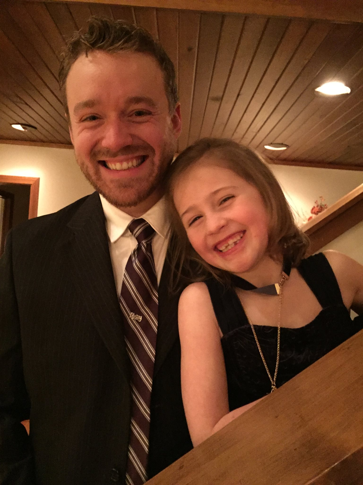

See my work

Current Research Interests
My research interests include number theory, arithmetic geometry, elliptic curves, and Galois representations. My primary focus has been torsion subgroups of elliptic curves over function fields of genus zero, and genus one. Recently, I have become interested in torsion subgroups of elliptic curves over function fields of hyperelliptic curves.
- Torsion Subgroups of Elliptic Curves over Function Fields of Genus 0, in JNT
- Torsion Subgroups of Elliptic Curves over Function Fields of Genus 1 (current rough draft)
Seminar Talks
- Torsion Subgroups of Elliptic Curves over Function FieldsDecember 11, 2017
Number Theory Seminar, Boston University
- ABC and Fermat for PolynomialsApril 1, 2017
SIGMA Seminar, University of Connecticut
- The Fermat Equation for PolynomialsSpring 2017
Undergraduate Math Club Talk, University of Connecticut
Conference Talks
- Torsion Subgroups of Elliptic Curves over Function FieldsMarch 20, 2018
2018 Automorphic Forms Workshop, Tufts University
- Torsion Subgroups of Elliptic Curves over Function Fields of Genus 0October 14, 2017
Maine-Quebec Number Theory Conference, University of Maine
- Connecticut Summer School in Number Theory (CTNT)May 2018
University of Connecticut, Storrs, CT
- Automorphic Forms WorkshopMarch 2018
Tufts University, Boston, MA
- Arizona Winter School: Iwasawa Theory March 2018
University of Arizona, Tucson, AZ
- Maine-Qu´ebec Number TheoryOctober 2017
University of Maine, Orono, ME
- MSRI Summer School: Automorphic Forms and Langlands Program July/August 2017
MSRI, Berkeley, CA
- Seventh Upstate New York Number Theory Conference May 2017
Binghamton University, Binghamton, NY
- Arizona Winter School: Perfectoid SpacesMarch 2017
University of Arizona, Tucson, AZ
- Connecticut Summer School in Number TheoryAugust 2016
University of Connecticut, Storrs, CT
- Arizona Winter School: Arithmetic GeometryMarch 2016
University of Arizona, Tucson, AZ
- BU/Keio University Workshop 2015 September 2015
Boston University, Boston, MA
- Elliptic Curves @ UConn May 2014
University of Connecticut, Storrs, CT
- Advanced Technological Education (ATE) 2013 Conference Fall 2013
American Association of Community Colleges, Washington DC
Currently, I am lecturing two sections of Applied Linear Algebra, Syllabus.
Prior Teaching Experience
Lecturer
- Calculus for Business and EconomicsSpring 2016, Fall 2016, Fall 2017, Spring 2018
- BRIDGE CalculusSummer 2015
Teaching Assistant
- CTNT Graduate AssistantSummer 2018
- Calculus IISpring 2017
- Calculus for Business and EconomicsSummer 2016
- CTNT Graduate AssistantSummer 2016
- Calculus IIFall 2015
- Calculus ISpring 2015
- Calculus IIFall 2013, Spring 2014, Fall 2014
Contact Information and Curriculum Vitae
Office: Monteith 120
Office Hours: Monday 11:15-1:15, Friday 11:15-12:15
Email: robert.j.mcdonald@uconn.edu
Phone: 860.486.1283
Curriculum Vitae
UConn Website
UConn Mathematics Department
Calendar for Fall Semester 2018
Center for Excellence in Teaching and Learning
Q Center
Student Admin System
HuskyCT